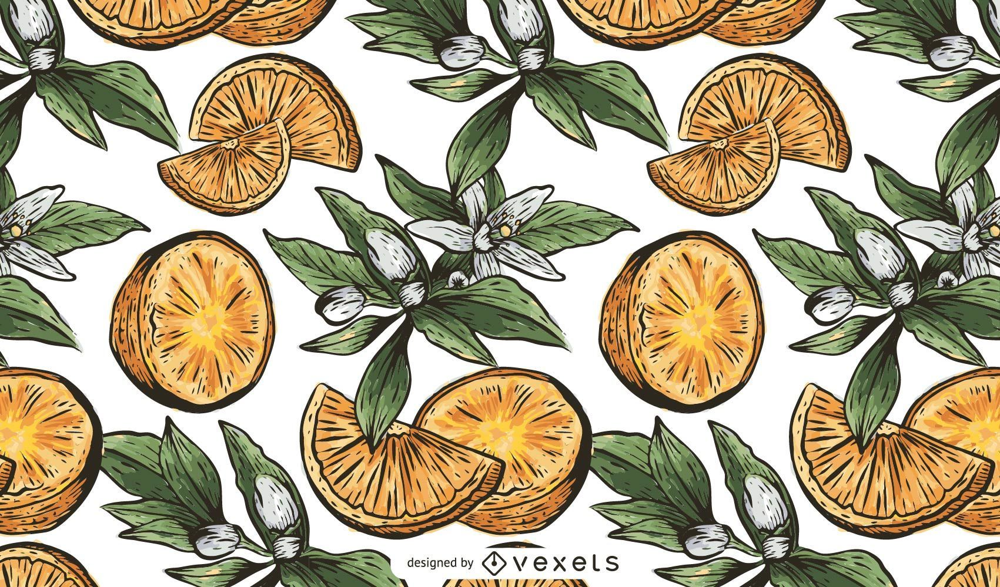
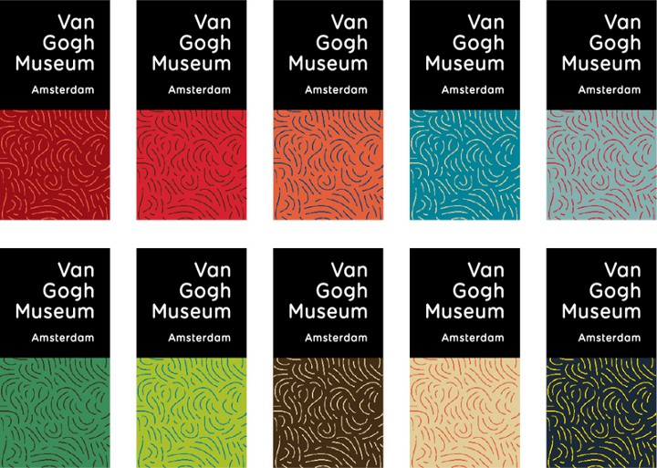
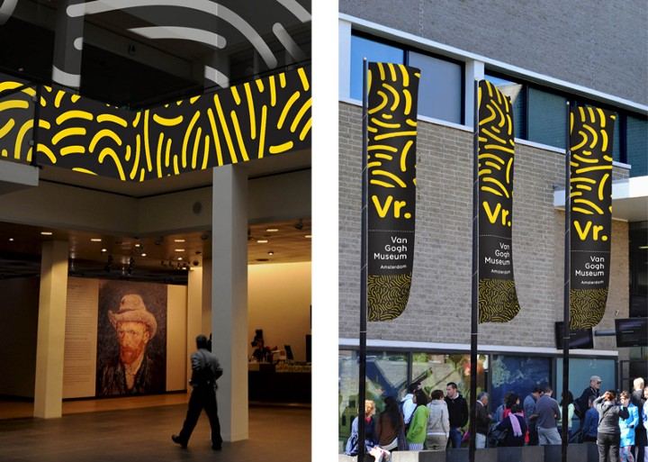
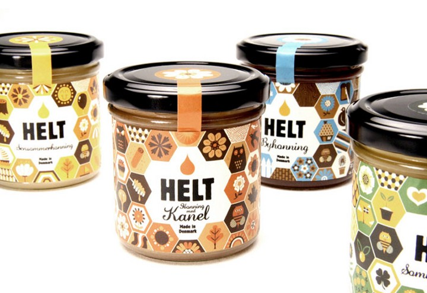
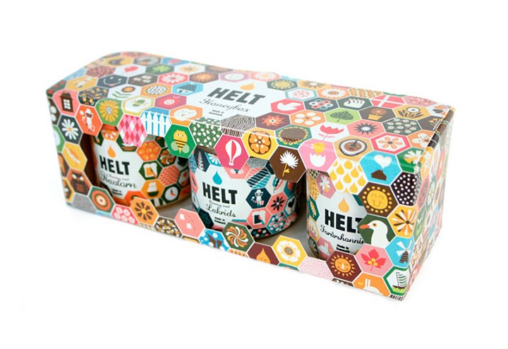
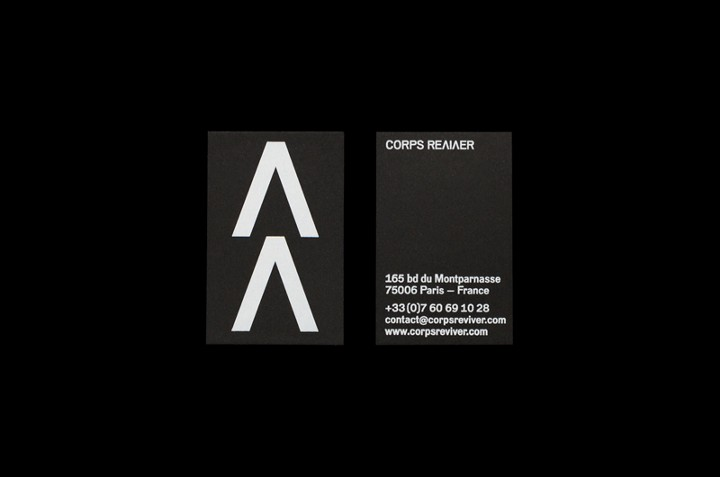
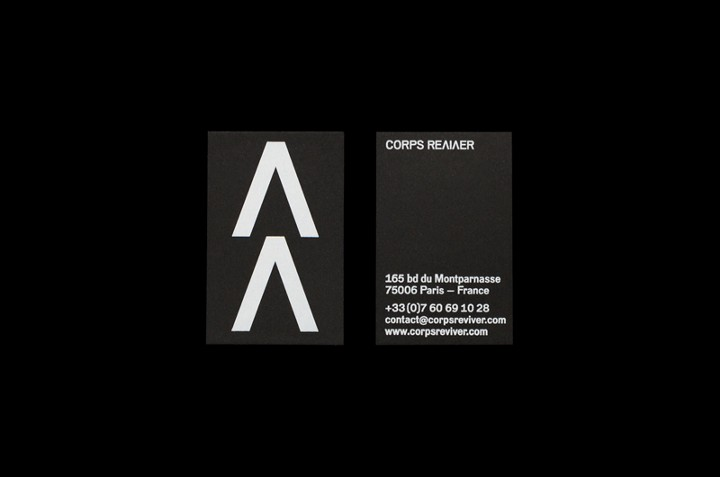

Паттерны: исккусство или безвусица?
Содержание:
Введение
Паттерны окружают нас повсюду, хоть мы этого и не осознаём.
Их применяют для декорации зданий, в одежде,
для
упаковки
товаров, для раскраски транспортных средств.
Даже в природе можно повсюду встретить повторяющиеся рисунки —
барханы в
пустыне или, например, полоски у зебры.

Примеры
На самом деле паттерны встречаются в нашей жизни повсеместно. Будь то дизайн ваших обоев или клетки вашей
рубашки.
В основе фирменного стиля музея Ван Гога в Амстердаме лежит сочетание минималистичного логотипа и
контрастного живописного паттерна, отсылающего к работам художника. Знак музея — классический логотип
(уникальное текстовое написание) на черном квадрате, повторяющем форму здания. Производитель натурального меда, в ассортименте которого представлено шесть видов вкусов. В фирменном
стиле Helt зашифрована информация о том, какой этот мед на вкус и из каких цветов он был собран. В
основе
дизайна этикеток используется классическая и довольно строгая система сотового узора пчелиного улья.
Corps Reviver — французское издательство, которое занимается возрождением, редизайном и переизданием
классических литературных произведений. В своей работе они часто используют смелые цвета и образы.
Вот примеры некотрых удачных применений паттернам:




 

Заключение
Итак, в современном мире паттерны используются повсеместно. Будь то элемент дизайна крупной компании, стильный узор для новой коллекции одежды или раскраска кожи змеи: для всего можно применить паттерны. Несмотря на свою, с первого взгляда, простоту, правильно подобранный паттерн очарует и понравится даже самому искушенному пользователю